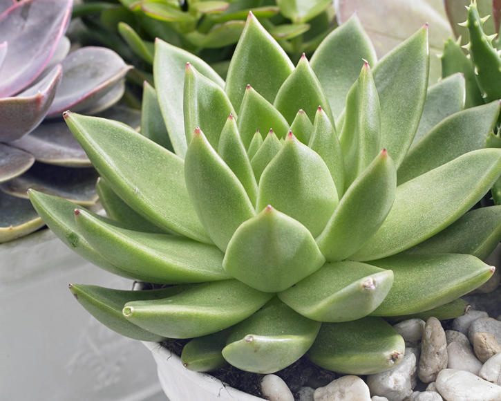
Echeveria
Echeverias are fast-growing succulents popular for their unique appearance and low maintenance needs. Their stunning rosette shape, plump leaves, and large variety of colors give them a striking resemblance to flowers.Most echeveria will remain fairly small, no larger than a foot wide, but some species will grow into small shrub-like, 2-foot tall plants.
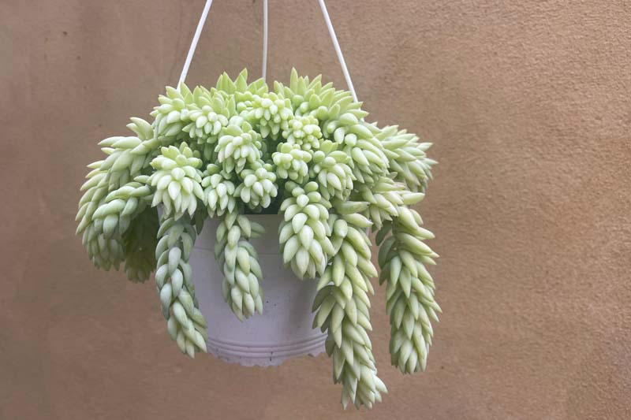
Sedum Morganianum
Sedum morganianum) is a popular succulent with rows of fleshy, tear-drop-shaped leaves that are blue-green.They are most commonly grown as potted plants, often suspended as hanging specimens. Indoors, the succulent can be planted and very easily propagated year-round by stem cuttings or laying a dropped leaf on top of soil, while outdoors it does best planted in early spring.
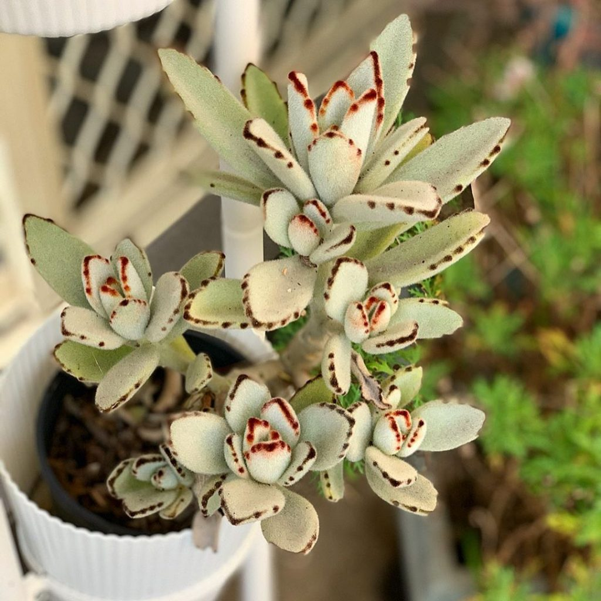
Kalanchoe Tomentosa
Kalanchoe Tomentosa,also commonly called panda plant, are extremely popular houseplants because they are so easy to care for, as well as attractive and rather cute.All kalanchoes, including K. tomentosa, are toxic to cats and dogs and mildly toxic to humans if the leaves are eaten.
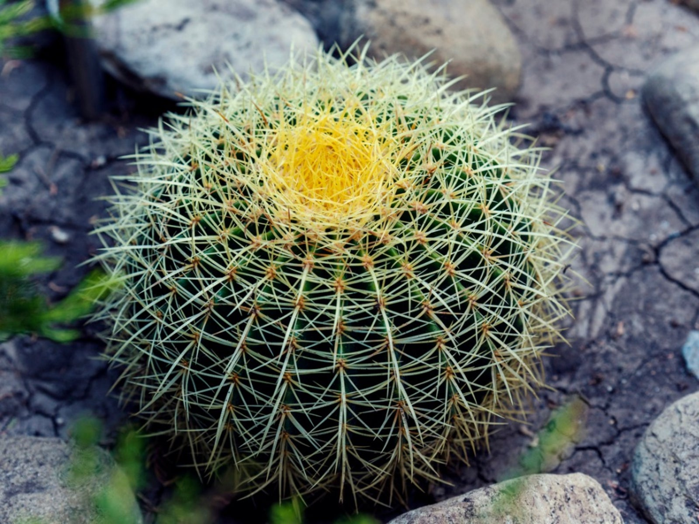
Barrel Cactus
The barrel cactus or golden ball (Echinocactus grusonii) is frequently cultivated as a houseplant. It rarely blooms indoors, but it may flower in the spring or summer if it is at least 15 years old and grown in ideal conditions.
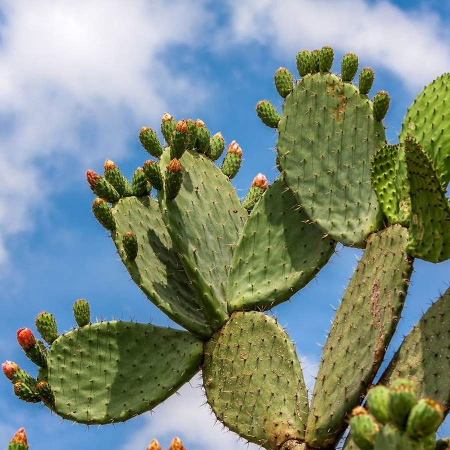
Opuntia
Opuntia cactus, commonly known as the Prickly Pear cactus, is a genus that boasts a fascinating array of species well-adapted to arid and semi-arid climates. With its origins rooted in the Americas, Opuntia has spread far and wide across the globe, captivating plant enthusiasts with its unique appearance and resilience.
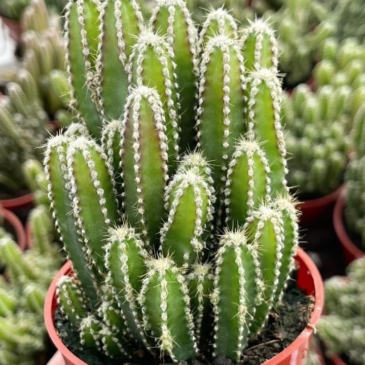
Acanthocereus Tetragonus
Acanthocereus Tetragonus is a true desert cactus and well adapted for living in direct sun and going long periods without water.Acanthocereus tetragonus gets its common name from its miniature spire-like growth. It's easy to see its resemblance to a tiny castle perfectly suited for a fairy!
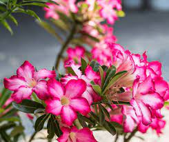
Adenium Obesum
The desert rose (Adenium obesum) is a slow-growing plant, only growing about 12 inches per year. Desert rose is often used as a bonsai plant thanks to its thick succulent trunk, thin and delicate leaves, and luscious, deep pink trumpeting flowers.
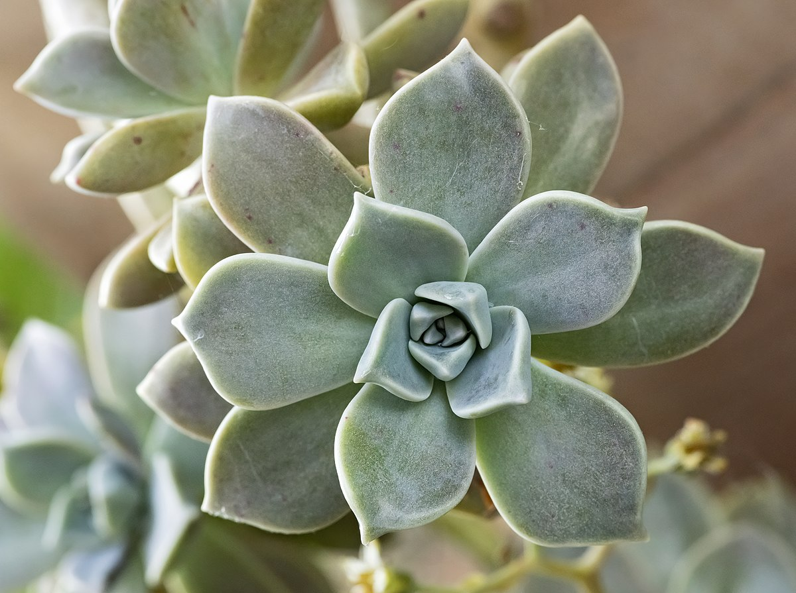
Graptopetalum Paraguayense
Graptopetalum paraguayense is a cold-hardy succulent with pale gray or whitish leaves on sprawling stems. Its versatile growth will help it stand out in your landscape as an unusual groundcover, cascading down a container, or even as a houseplant.
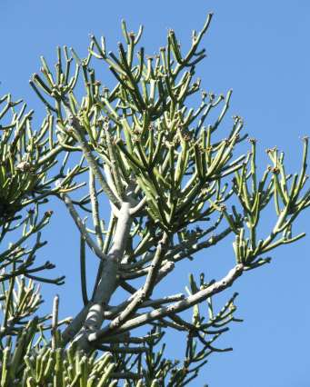
Euphorbia Tirucalli
Euphorbia tirucalli is an interesting shrub with succulent foliage that’s native to semi-arid tropical climates. It can grow quite large in the wild—up to 30 feet tall and 6-10 feet wide. Indoors, the plant will stay at a more manageable 2-6 feet tall and 1-3 feet wide.
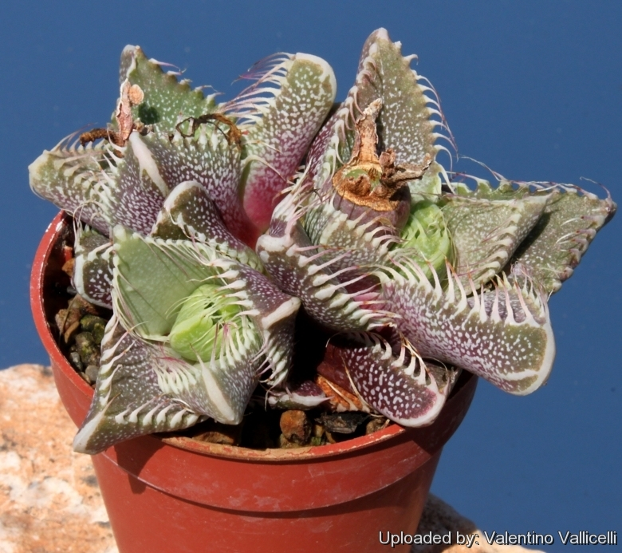
Faucaria Tigrina
Faucaria Tigrina(Tiger jaws)is a dependable perennial succulent with low rosettes of fleshy, triangular leaves edged with spiny "teeth," from which its common name derives. Fierce though it looks, the spikes are soft and flexible to the touch. In fall or winter, the plant may produce attractive yellow flowers with long, narrow petals
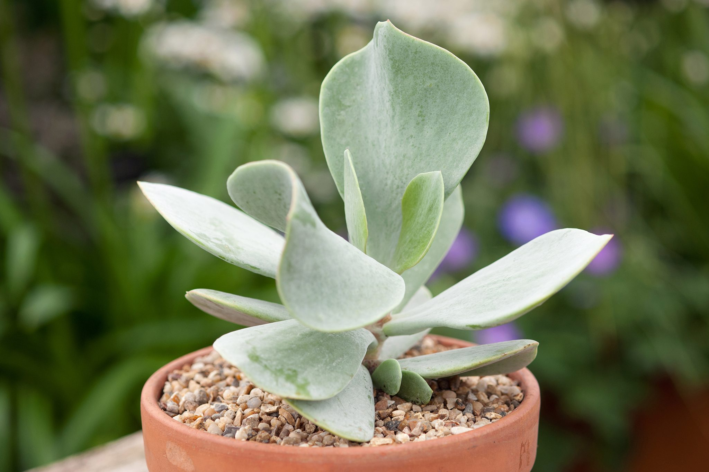
Cotyledon Orbiculata
Cotyledon orbiculata is an extremely variable species, one that grows to approximately 1.3 m (4.3 ft) in height.These attract bees and nectar feeding birds like the sunbirds. The leaves are used medicinally for corns, boils and warts and the leaf juice is used to treat earache, toothache and epilepsy.
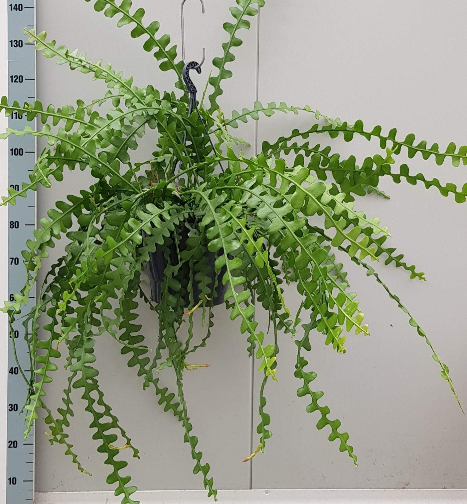
Epiphyllum Anguliger
Epiphyllum anguliger, commonly known as the fishbone cactus or zig zag cactus, is a cactus species native to Mexico. The species is commonly grown as an ornamental for its fragrant flowers in the fall.This easily cultivated, fast growing epiphyte requires a compost containing plenty of humus and sufficient moisture in summer.
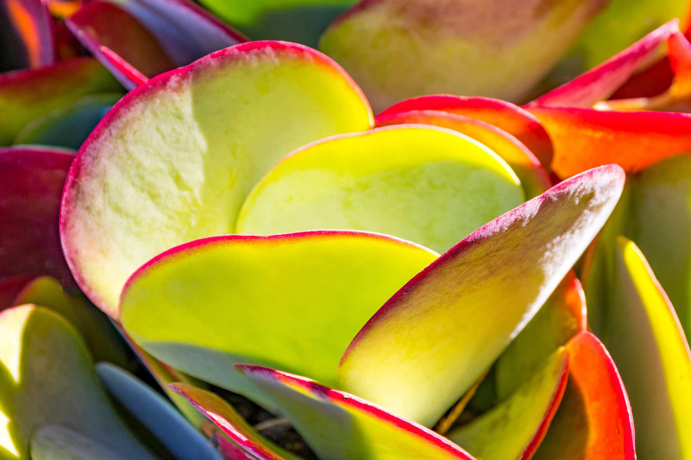
Kalanchoe Thyrsiflora
Kalanchoe Thyrsiflora is a succulent plant known for its flat, rounded leaves.This drought-tolerant plant grows a thin coating of white powder called farina, or epicuticular wax, to protect its leaves.Kalanchoe thyrsiflora grows best in sandy, well-drained soil with full sun and warm, arid conditions.
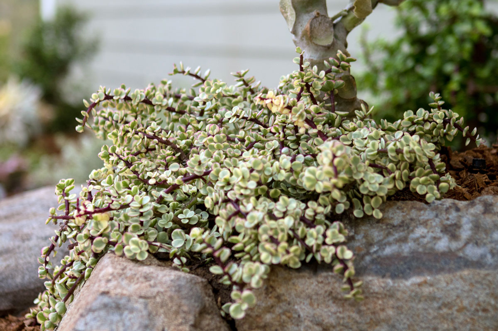
Portulacaria Afra
A slow-growing, evergreen succulent shrub with small, fleshy, glossy green leaves. Mature stems have greyish bark and young stems are often flushed with red. Clusters of tiny, saucer-shaped pale pink flowers are produced at the tips of the stems in summer
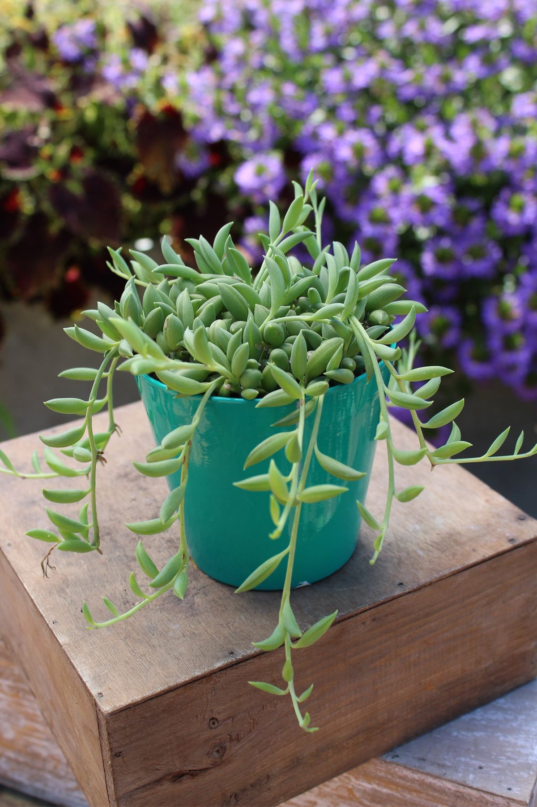
Curio Radicans
Curio Radicans is a trailing succulent known for growing fast and being low-maintenance. With glossy, banana-shaped leaves that grow in long-hanging tendrils, it's an ideal hanging houseplant. This drought-tolerant, easy-going succulent needs a spot beside a sunny, warm window to thrive.